Guardião
Classe atual · conceito S1Papel. Tanque / protetor
Arma. Espada e escudo
8 classes iniciais · 12 evoluções cada
Guardião, Bárbaro, Sombra, Empalador, Caçador, Mago, Oráculo e Engenheiro: fantasia, mecânica, evoluções e traje por forma.
Quatro classes por tribo. Selo verde = classe atual com conceito; roxo = nova, só com conceito antigo.
Papel. Tanque / protetor
Arma. Espada e escudo
Papel. Dano alto em alvo único
Arma. Duas lâminas
Papel. Dano à distância, controle
Arma. Arco e armadilhas
Papel. Cura e proteção
Arma. Varinha e livro
Papel. Dano corpo a corpo em área
Arma. Duas mãos
Papel. Dano em área, controle
Arma. Cajado ou varinha e orbe
Papel. Tanque, suporte de equipamento
Arma. Martelo, tenazes (a definir)
Papel. Suporte (barreiras), cura
Arma. Lança e mochila de ervas (a definir)
Papel. Dano de alcance médio, controle de linha
Arma. Foice de haste e máscara
Papel. Dano híbrido corpo a corpo, cura e área
Arma. Núcleo + manopla ou martelo
Papel. Dano por invocação, controle
Arma. Pá e lanterna (a definir)
Papel. Suporte (bônus), controle
Arma. Mastro com flâmula
Elenco de lançamento decidido pelo criador em 12/11. Árvore: base (1), nome novo no 20 (caminho único) e escolha de 1 de 2 no 40; depois cada evolução (40, 60, 80, 100, 130) é classe nova, 12 formas por classe; a forma 130 vai até o nível 150. O MVP (até o nível 50) pede 4 por classe. Cada forma é um cartão: clique para abrir o painel da forma (imagem grande do traje, caminho A ou B, masculino e feminino; setas do teclado trocam de forma). Já há conceito dos trajes S1 a S6 (até o nível 60); as formas acima disso aguardam arte. Toda classe tem versão masculina e feminina e 3 cabeças por gênero (decisão do criador, 18/11); o 3D dos trajes ainda não foi feito. Nomes das evoluções em proposta.
No jogo roda hoje Em produção em obra Conceito arte ou regra no papel Provisório funciona, será trocado
Fantasia. a muralha que jurou não deixar ninguém para trás.
Mecânica. Juramentos: escolhe 1 de 3 juramentos ativos (Proteger, Resistir, Vingar); cada um impõe uma condição e libera técnicas enquanto cumprida.
Papel. tanque / protetor de grupo.
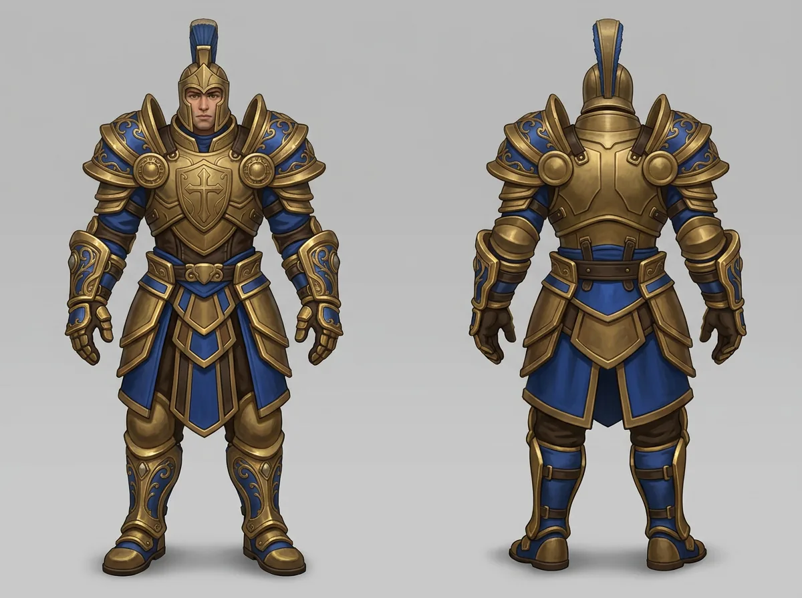
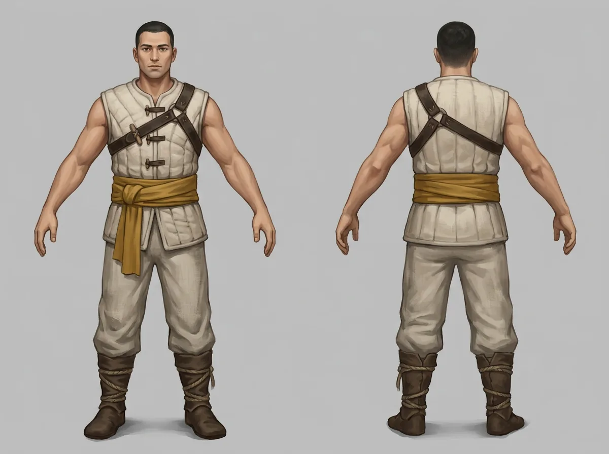
S1 · nível 1S6 · nível 60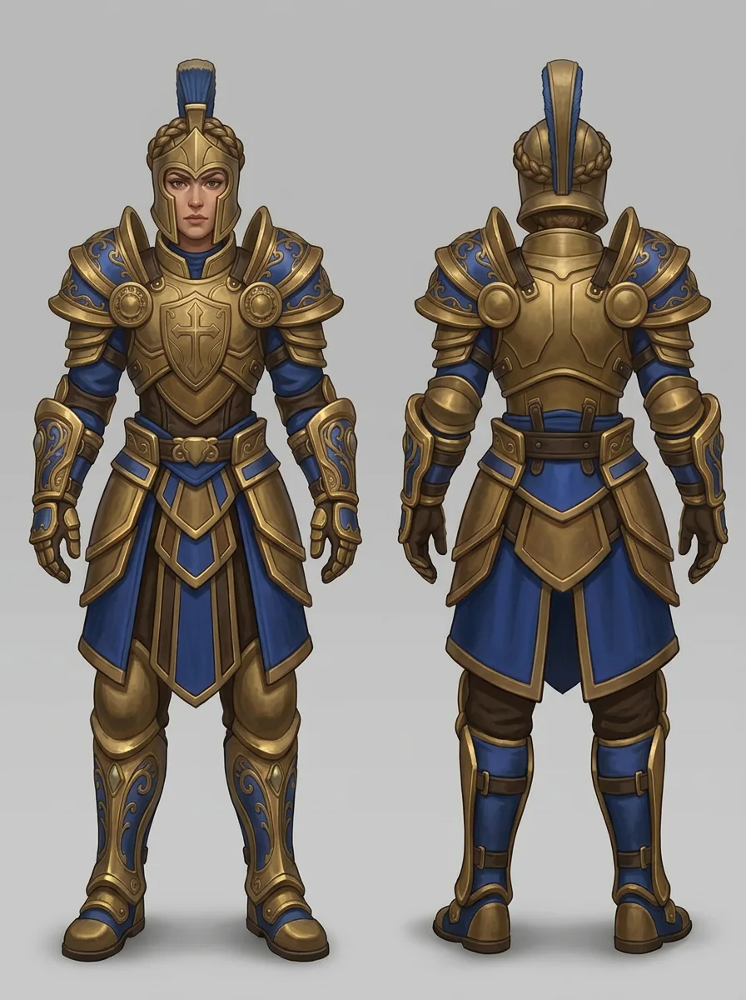
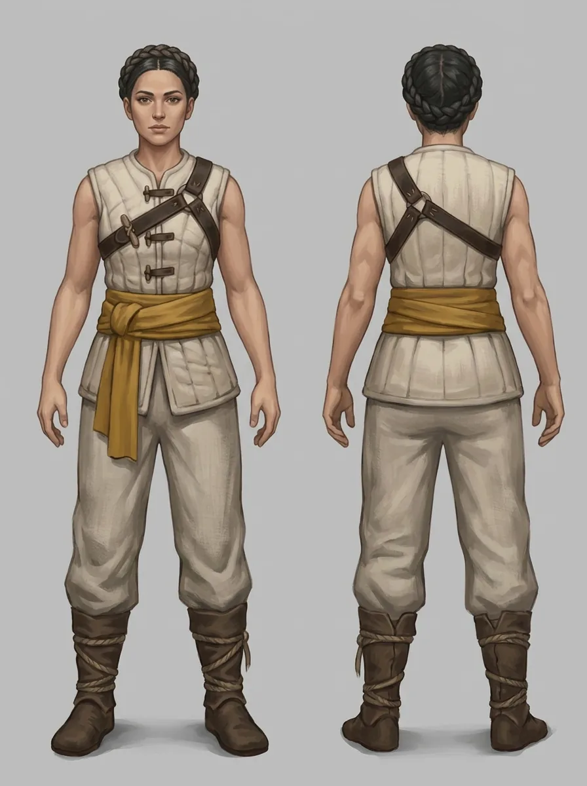
S1 · nível 1S6 · nível 60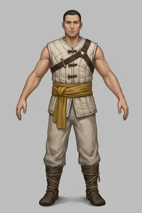
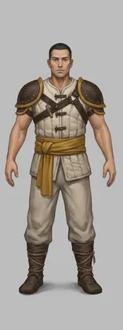
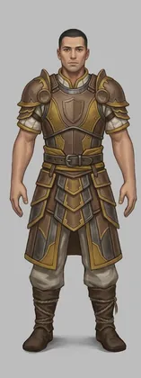
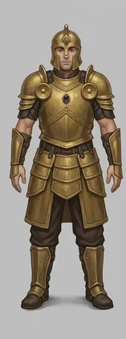
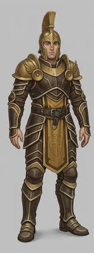
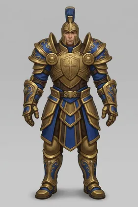
Caminho A: juramento coletivo, o grupo vira uma fortaleza · Caminho B: muralha sozinha, quase imortal e lenta · clique numa forma para abrir
guarda a vila ao pé do sino sem saber o preço dele; quando as vozes falam, o juramento passa a ter peso moral (ele pode jurar proteger quem está *dentro* do sino).
| Nível | Nome | Como joga |
|---|---|---|
| 1 base | Guardião | espada e escudo, segura o inimigo |
| 20 (caminho único) | Sentinela | aprende a segurar a linha e a jurar; o ramo vem no 40 |
| 40-A | Juramentado | cumpre juramentos para dar bônus ao grupo; mais regras, mais recompensa |
| 40-B | Baluarte | puro bloqueio e absorção; simples e sólido |
| 60-A | Fiador | juramentos duplos: o grupo inteiro entra no voto |
| 60-B | Bastião Vivo | vira parede móvel que devolve parte do dano |
| 80-A | Fiador-Mor | salto de poder (classe nova) |
| 80-B | Colosso de Bronze | salto de poder (classe nova) |
| 100-A | Voto Eterno | o juramento vale para a cidade inteira |
| 100-B | Fortaleza Imortal | uma muralha que ninguém derruba |
| 130-A | Juramento Vivo | forma final, adorno em cristal vivo |
| 130-B | Muralha Eterna | forma final, adorno em cristal vivo |
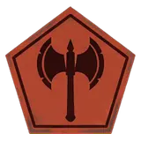
Fantasia. força bruta que ninguém segura.
Mecânica. Fúria: barra que sobe ao bater e apanhar, gasta em golpes enormes; sem mana.
Papel. dano corpo a corpo em área.
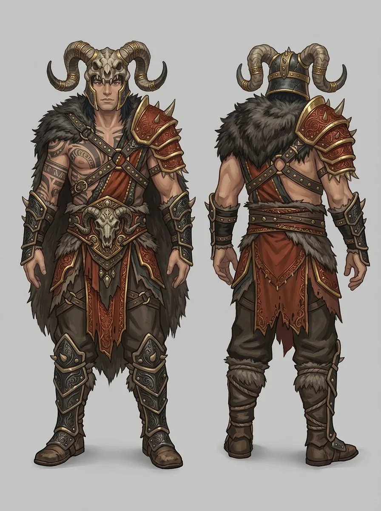
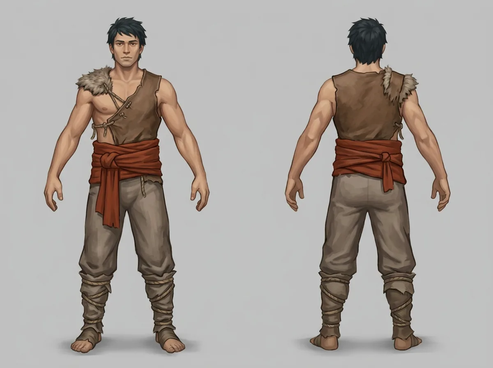
S1 · nível 1S6 · nível 60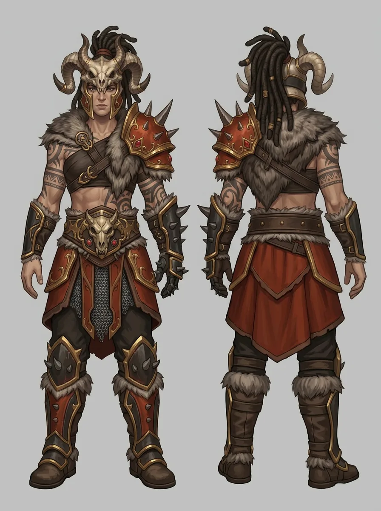
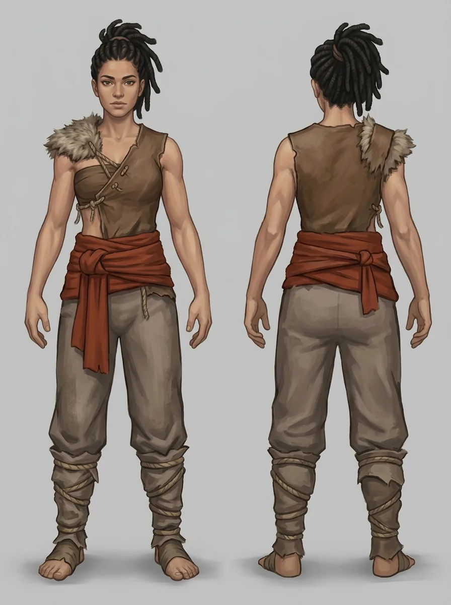
S1 · nível 1S6 · nível 60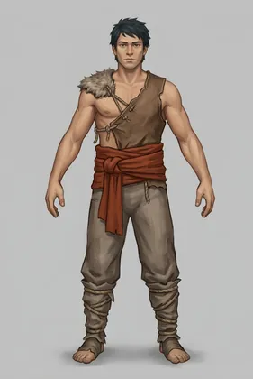
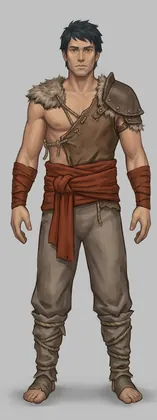
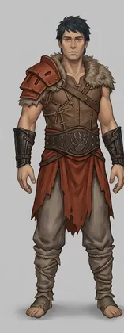
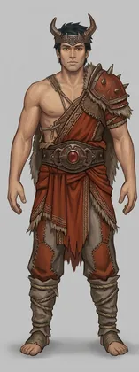
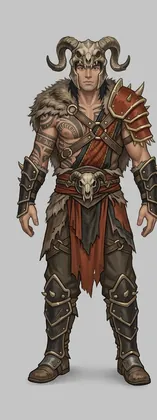
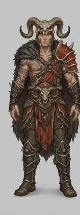
Caminho A: destruição em área, a terra racha · Caminho B: fera sem fim, vitalidade e velocidade · clique numa forma para abrir
ouve o sino como dor no ferro e quer quebrar o que prende; para ele a rede é uma jaula.
| Nível | Nome | Como joga |
|---|---|---|
| 1 base | Bárbaro | machado ou espada de duas mãos |
| 20 (caminho único) | Rompedor | a fúria passa a render golpes de área |
| 40-A | Devastador | golpes lentos e enormes, uma pancada decide |
| 40-B | Selvagem | ataca sem parar e se cura com sangue; luta longa |
| 60-A | Ruína | golpes que racham o chão em linha |
| 60-B | Fera de Guerra | fúria permanente, mais velocidade e roubo de vida |
| 80-A | Quebra-Terra | salto de poder (classe nova) |
| 80-B | Matilheiro | salto de poder (classe nova) |
| 100-A | Calamidade | cada golpe é um desastre natural |
| 100-B | Lobo Ancestral | fera lendária, vitalidade e velocidade sem fim |
| 130-A | Fim do Mundo | forma final, adorno em cristal vivo |
| 130-B | Alfa Eterno | forma final, adorno em cristal vivo |
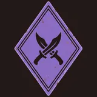
Fantasia. quem some do registro e aparece nas costas.
Mecânica. Furtividade + Corrente: sai do campo de visão, abre com golpe de emboscada, encadeia pontos e fecha com finalizador.
Papel. dano alto em alvo único, rápido e frágil.
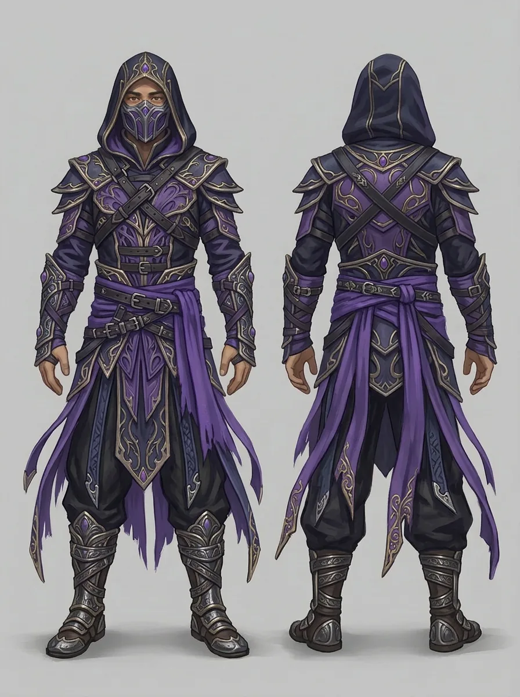
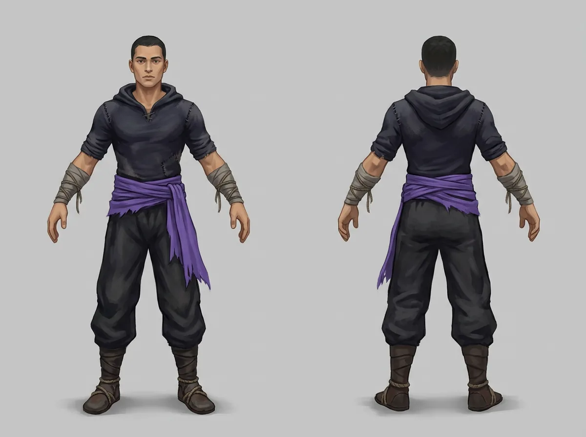
S1 · nível 1S6 · nível 60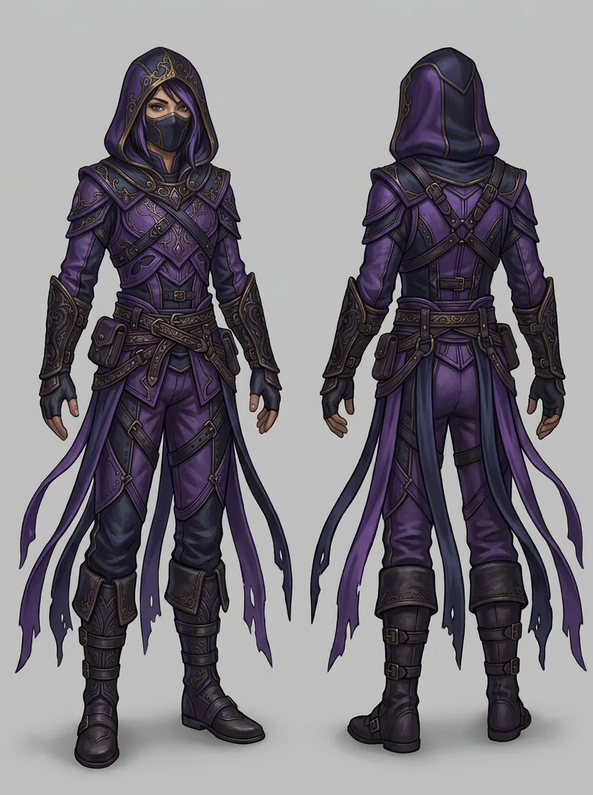
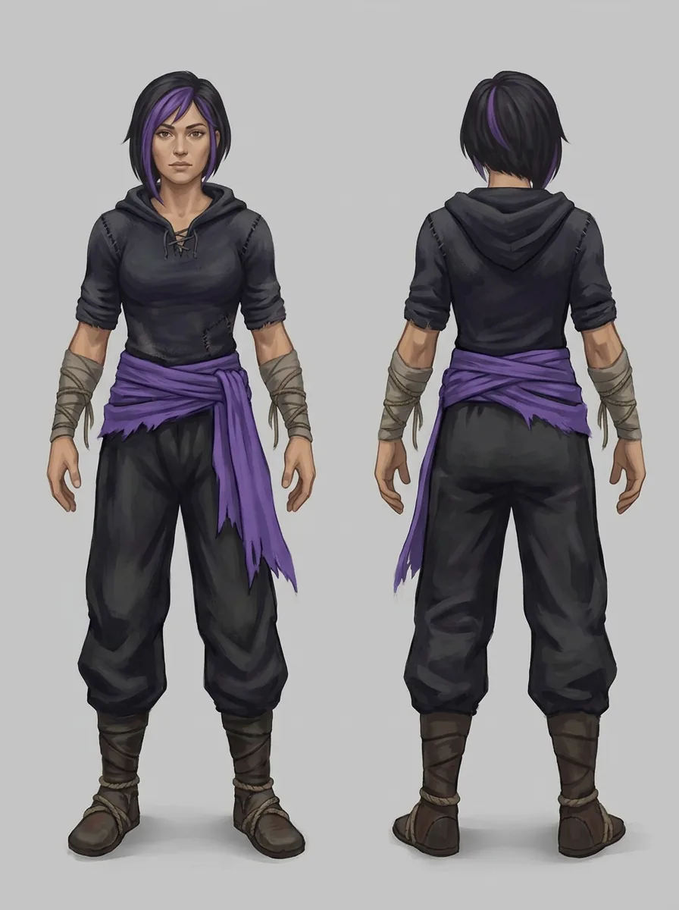
S1 · nível 1S6 · nível 60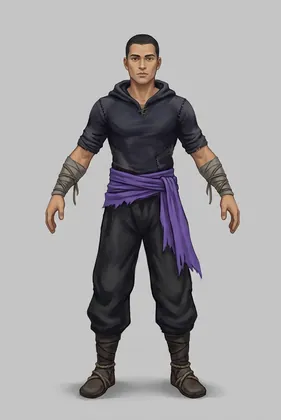
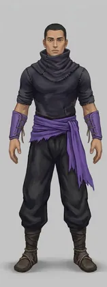
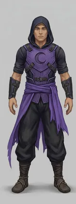
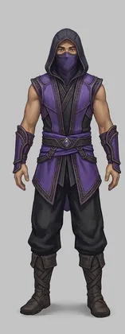
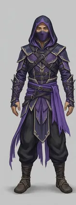
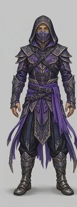
Caminho A: execução invisível, um alvo por vez · Caminho B: combate aberto, ritmo e esquiva · clique numa forma para abrir
é o "mártir não registrado": gente que o mundo apagou; rouba cristal e segredos nas frestas entre sinos.
| Nível | Nome | Como joga |
|---|---|---|
| 1 base | Sombra | duas lâminas, ataque rápido |
| 20 (caminho único) | Rondante | some e volta; domina a corrente de golpes |
| 40-A | Espectro | emboscada: some, mata uma vítima e some de novo |
| 40-B | Corte-Fundo | combate aberto, sangramentos e esquiva |
| 60-A | Sem-Nome | some da lista de alvos dos monstros por alguns segundos |
| 60-B | Dançarino de Sangue | giro contínuo, cada sangramento acelera o próximo golpe |
| 80-A | Rosto Apagado | salto de poder (classe nova) |
| 80-B | Redemoinho Rubro | salto de poder (classe nova) |
| 100-A | Lâmina Sem-Rosto | a execução é invisível e instantânea |
| 100-B | Ceifa Rubra | tempestade de cortes que se alimenta de sangue |
| 130-A | Nunca-Existiu | forma final, adorno em cristal vivo |
| 130-B | Eclipse Rubro | forma final, adorno em cristal vivo |
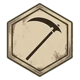
Fantasia. o carregador de nome alheio que colhe o que o campo deixa.
Mecânica. Ecos: a foice captura o eco de inimigos mortos (1 slot); o eco empresta uma técnica por um tempo. Máscaras (ramo B): trocar de máscara muda a postura.
Papel. dano corpo a corpo de alcance médio, controle de linha.
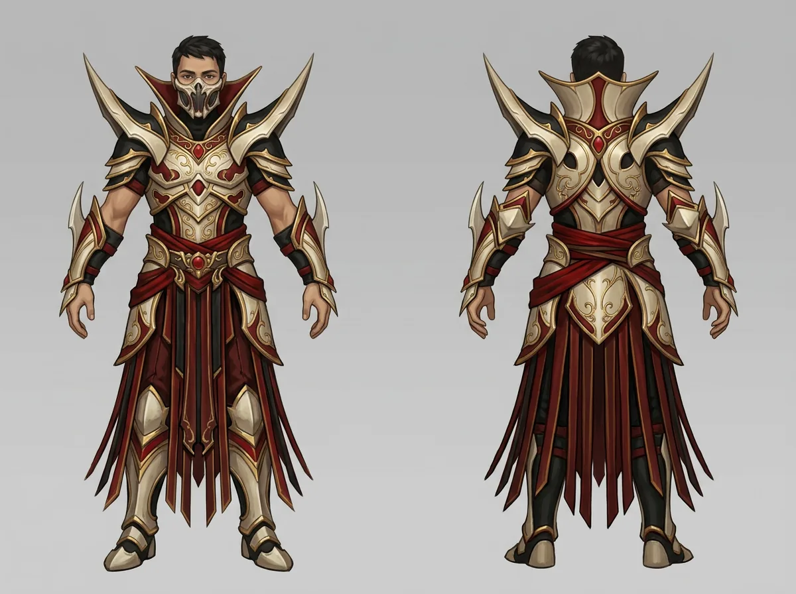
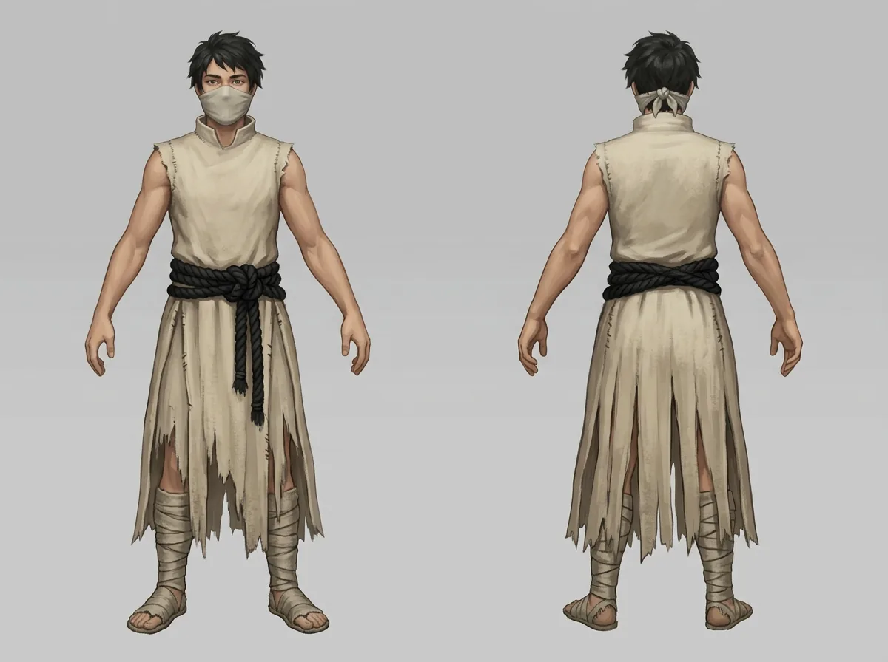
S1 · nível 1S6 · nível 60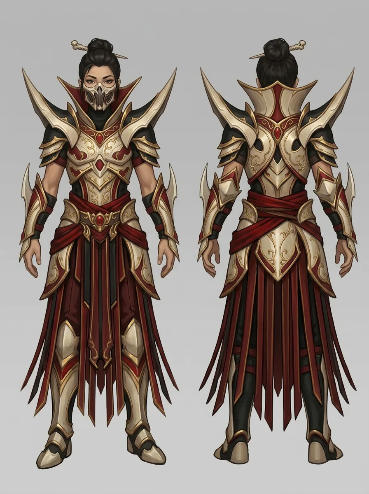
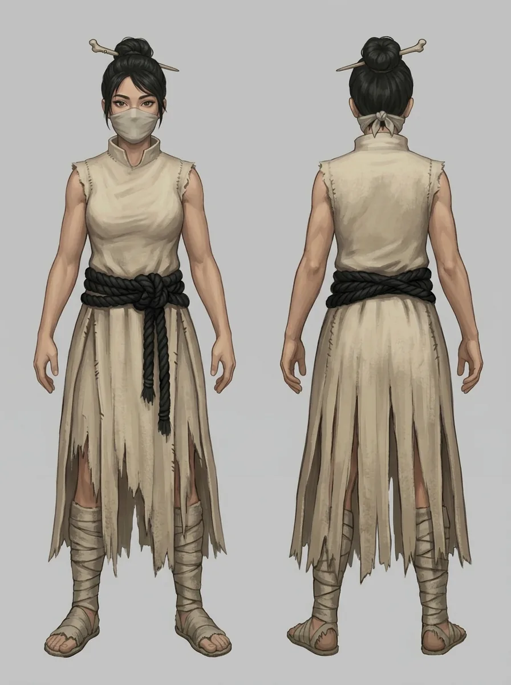
S1 · nível 1S6 · nível 60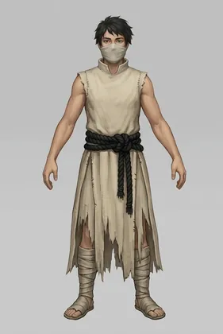
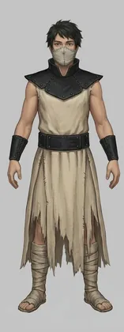
Caminho A: colheita de ecos em massa · Caminho B: cada máscara muda a classe por inteiro · clique numa forma para abrir
usa a máscara de um morto apagado dos registros; quanto mais usa, mais a voz dele fala. Está do lado dos presos, mas não sabe se os liberta ou os usa.
| Nível | Nome | Como joga |
|---|---|---|
| 1 base | Empalador | foice de haste longa: alcance médio e arco largo; máscara no nariz e na boca |
| 20 (caminho único) | Guarda-Máscara | a máscara fala; começa a colher ecos |
| 40-A | Ceifador de Ecos | foice e ecos: ganha técnicas dos mortos |
| 40-B | Mascarado | foice e 2 máscaras: ofensiva e defensiva, troca no meio da luta |
| 60-A | Pastor de Ecos | guarda 3 ecos e solta em sequência |
| 60-B | Senhor das Máscaras | 3 máscaras, uma passiva própria cada |
| 80-A | Maestro de Ecos | salto de poder (classe nova) |
| 80-B | Mestre das Faces | salto de poder (classe nova) |
| 100-A | Rei dos Ecos | um exército de ecos sob seu comando |
| 100-B | Mil Máscaras | todas as máscaras ao mesmo tempo, cada uma uma postura |
| 130-A | Coro Eterno | forma final, adorno em cristal vivo |
| 130-B | Rosto Verdadeiro | forma final, adorno em cristal vivo |
Fantasia. o batedor que conhece cada trilha e cada ângulo.
Mecânica. Rotas e ângulos: armadilhas e estacas marcam um caminho; tiro de ângulo/costas dá dano extra e a armadilha liga ao tiro.
Papel. dano à distância e controle de campo.
Caminho A: campo de batalha inteiro como armadilha · Caminho B: pontaria absoluta, um tiro por luta · clique numa forma para abrir
guia de fronteira, enxerga os rastros do cristal roubado; os goblins das máquinas são presa e, ao mesmo tempo, testemunhas.
| Nível | Nome | Como joga |
|---|---|---|
| 1 base | Caçador | arco e uma armadilha de chão |
| 20 (caminho único) | Mateiro | lê rastros e monta armadilhas em linha |
| 40-A | Andarilho | monta rotas com armadilhas e cordas, guia o monstro |
| 40-B | Perseguidor | marca 1 alvo e o persegue com tiro pesado |
| 60-A | Senhor das Rotas | rotas que somem e reaparecem, armadilhas em cadeia |
| 60-B | Olho-de-Águia | tiro de longuíssimo alcance, preparo longo |
| 80-A | Cartógrafo de Armadilhas | salto de poder (classe nova) |
| 80-B | Olho de Cristal | salto de poder (classe nova) |
| 100-A | Senhor da Fronteira | o mapa inteiro é uma armadilha |
| 100-B | Lenda do Último Tiro | um tiro por luta que nunca erra |
| 130-A | Mapa Vivo | forma final, adorno em cristal vivo |
| 130-B | Horizonte Fixo | forma final, adorno em cristal vivo |
Fantasia. o estudioso que domina os elementos com o cristal como foco.
Mecânica. Ciclo de elementos: cada feitiço deixa uma marca elemental; marca certa + feitiço certo = reação (pilar de elementos e cartas).
Papel. dano em área e controle.
Caminho A: reações em cadeia, tempestade · Caminho B: teia total, controle do ritmo · clique numa forma para abrir
estuda o cristal em laboratório; vê o que o cristal é (gente) e escolhe se lê o aviso ou segue a bolsa de pesquisa.
| Nível | Nome | Como joga |
|---|---|---|
| 1 base | Mago | bola de energia simples e escudo |
| 20 (caminho único) | Adepto | marcas elementais e reações simples |
| 40-A | Arcanista | explosões elementais e reações em área |
| 40-B | Tecelão | fios entre alvos e terreno: prende, reparte dano e conduz ataques |
| 60-A | Cristalomante | carrega o cristal e solta rajadas gigantes |
| 60-B | Mestre dos Fios | teia que cobre a tela inteira; controla o ritmo da batalha |
| 80-A | Prisma Ardente | salto de poder (classe nova) |
| 80-B | Fio-Mestre | salto de poder (classe nova) |
| 100-A | Senhor da Tempestade | reações em cadeia por toda a tela |
| 100-B | Tecelão do Veio | os fios alcançam o próprio Veio |
| 130-A | Arconte de Cristal | forma final, adorno em cristal vivo |
| 130-B | Fio Primordial | forma final, adorno em cristal vivo |
Fantasia. a voz que escuta quem ninguém mais escuta.
Mecânica. Escuta: o livro anota quem apanhou; cura e proteção antecipam o dano e ficam mais fortes se o aliado já foi ferido naquela luta.
Papel. cura, proteção e utilidade de grupo.
Caminho A: cura em ondas e rajadas · Caminho B: proteção preditiva, o grupo quase intocável · clique numa forma para abrir
é quem ouve as vozes dos sinos e as traduz; seu livro guarda os nomes dos aliados e dos presos. É o rosto da retornada.
| Nível | Nome | Como joga |
|---|---|---|
| 1 base | Oráculo | cura simples e um escudo |
| 20 (caminho único) | Escutador | o livro anota quem apanhou; curas antecipadas |
| 40-A | Sineiro | sequência de toques: cura em ondas e bônus de grupo |
| 40-B | Profeta | prevê e protege antes do dano; menos cura, mais escudo |
| 60-A | Mestre do Badalo | sequência de 5 toques com efeito final enorme |
| 60-B | Voz dos Presos | convoca o eco de um preso que protege um aliado |
| 80-A | Badalo de Prata | salto de poder (classe nova) |
| 80-B | Intérprete de Almas | salto de poder (classe nova) |
| 100-A | Sino-Mestre | o toque final cura o grupo inteiro |
| 100-B | Vidente do Veio | o grupo quase intocável, previsão total |
| 130-A | Sino Vivo | forma final, adorno em cristal vivo |
| 130-B | Voz Una | forma final, adorno em cristal vivo |
Fantasia. o engenheiro que fez engenharia reversa no cristal e o prendeu num Núcleo (manopla esquerda de latão com coração de cristal). Lutador híbrido: socos, martelo, projétil de cristal, cura e o golpe mais forte do jogo.
Mecânica. Cargas do Núcleo (0 a 5, 5 gemas nos nós dos dedos): os golpes enchem, as habilidades gastam; com 5 cargas, Punho Supremo (acima do teto de dano só contra monstros; PvP sem exceção). Segurar 5 cargas por 8 s causa Núcleo Rachado (perde as cargas e 5% da vida). Substitui a antiga "Pressão".
Papel. dano corpo a corpo híbrido (físico + elemental), cura e área.
Caminho A: o corpo vira a máquina, um alvo por vez, Punho cada vez mais cedo · Caminho B: jardim de cristais elementais, área e controle · clique numa forma para abrir
é a classe da engenheira que quer substituir os sinos; o Núcleo é o protótipo dela, domado, que já custou vidas. Quem joga carrega o peso do dilema.
| Nível | Nome | Como joga |
|---|---|---|
| 1 base | Engenheiro | Núcleo + manopla ou martelo; Disparo, Brota-Cristal, Respiro |
| 20 | Calibrador | ganha Rajada de Punhos e Punho Supremo; domina as cargas |
| 40-A | Punho-Forja | corpo como máquina: combos longos, Punho com 4 cargas logo após um finalizador |
| 40-B | Semeador | campo de cristais: até 2 pilares, Brota-Cristal com Martelo de Cristal materializado |
| 60-A | Asceta do Núcleo | cargas curam 1% da vida cada |
| 60-B | Arquiteto de Campo | pilares ligados por raios entre si |
| 80-A | Punho Colossal | salto de poder (classe nova) |
| 80-B | Mestre dos Cristais | salto de poder (classe nova) |
| 100-A | Máquina Viva | o Núcleo toma o braço inteiro |
| 100-B | Arquiteto do Novo Mundo | planta a base do mundo sem sinos |
| 130-A | Punho Vivo | forma final, adorno em cristal vivo |
| 130-B | Arquiteto Vivo | forma final, adorno em cristal vivo |
Um mesmo personagem pode virar A ou B no 40; o traje acompanha até o 150.
O criador lembrou que o mesmo personagem pode virar uma coisa ou outra (caminho A ou B no 40) e que o conceito do traje tem de acompanhar isso até o nível 150. A árvore (design/gdd/class-tree-v2.json, 12 formas por classe) passa a dizer, em cada forma, que séries ela veste (campo traje) e qual série ilustra o seu espaço de imagem. Série S_k = níveis 10k-9 a 10k.
| Forma da árvore | Níveis | Séries vestidas | Série da imagem | Quantos designs por classe |
|---|---|---|---|---|
| Base (1) | 1-19 | S1-S2 | S1 | 1 (sem caminho) |
| 20 (caminho único) | 20-39 | S2-S4 | S2 | 1 (sem caminho) |
| 40-A e 40-B | 40-59 | S4-S6 | S4 | S4-S5: 1, caminho só no acento fosco e na insígnia; S6: 2 |
| 60-A / 60-B | 60-79 | S6-S8 | S6 | 2 (A e B) |
| 80-A / 80-B | 80-99 | S8-S10 | S8 | 2 |
| 100-A / 100-B | 100-129 | S10-S13 | S10 | 2 |
| 130-A / 130-B | 130-150 | S13-S15 | S13 | 2 |
Regra de divergência (vigente, opção B a partir da S6; o criador pode mudar):
Contagem até o 150 com a regra: S1-S5 8 designs cada (40) + S6-S15 16 cada (160) = 200 designs.
Conceitos já existentes no espaço de imagem (Customuse, 17/11; legenda "conceito em construção"): assets/concepts/classes/armaduras/S1/<classe>.png na forma Base e S6/<classe>.png na forma 60-A (provisório; o design 60-B ainda não existe). Os emblemas vigentes de cada classe (v2 para Sombra, Caçador e Engenheiro; v1 para as demais) também ficam no JSON (emblema). O emblema do Engenheiro v2 é o antigo (azul-aço): emblema novo (manopla com núcleo, turquesa e latão) pendente.
Fonte: design/art/visual-equipamento-por-classe.md, design/gdd/class-tree-v2.json
Decisão do criador (12/11): a evolução de classe não muda o corpo; mudam armadura, arma e mão secundária.
O visual do herói vem de três peças equipadas: a armadura de corpo (traje inteiro), a arma e a mão secundária (escudo, broquel, pavês, orbe ou livro). Nenhum outro slot tem modelo. Cada armadura é um item só com uma variante por classe: a "Couraça Wyvern" é a mesma no inventário, no mercado e na troca, mas no Guardião ela vira placa fechada com crista, no Empalador vira placa média com gola alta e máscara, no Mago vira túnica em camadas com gola de metal. A série (Wyvern) dá o tema comum (motivo, material, paleta); a classe dá a silhueta. A árvore de classe decide o fluxo (o ramo do 40 libera pesos de armadura e famílias de arma diferentes) e muda só o acento de cor do traje, nunca o corpo. No fim, cada personagem fica único pela soma das escolhas na árvore e do que veste, como no Priston Tale.
Fonte: design/gdd/visual-progression-equipment.md, design/gdd/class-tree-v2.md
Cada armadura é um item só, com um design inteiro por classe (e por caminho a partir da S6). Armaduras com vida: metal claro que reflete, tecido vivo, sem emissão.